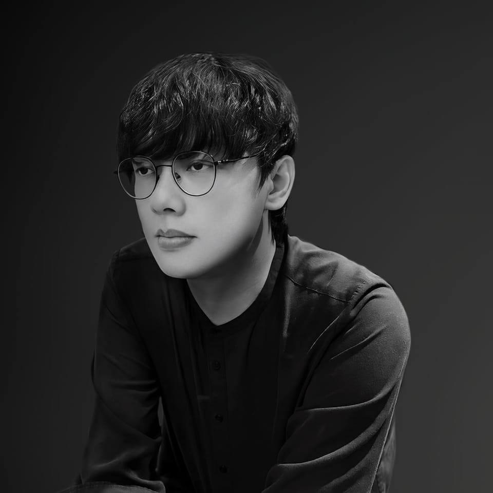
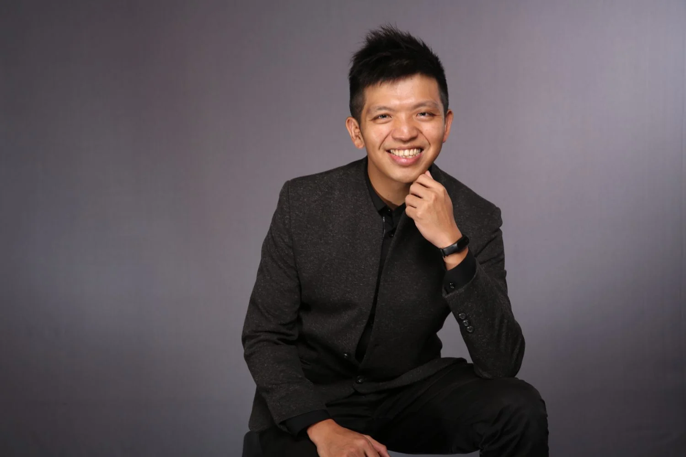
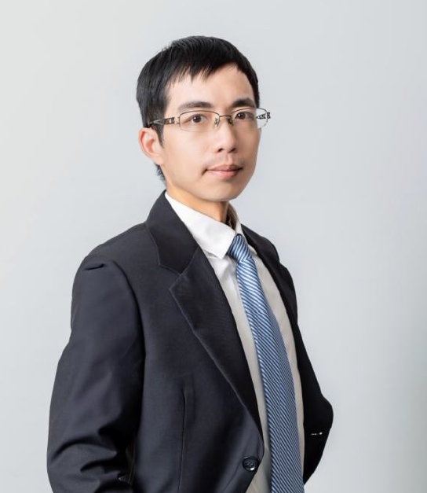
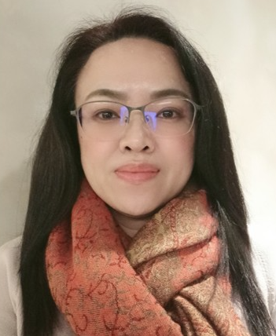
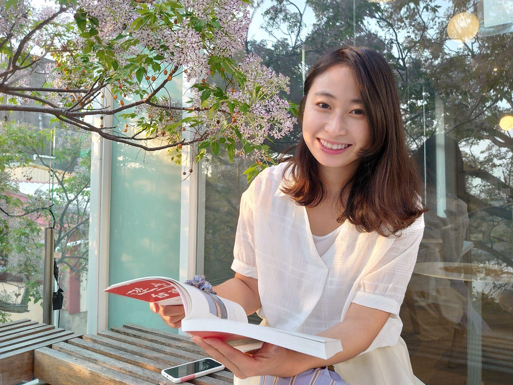
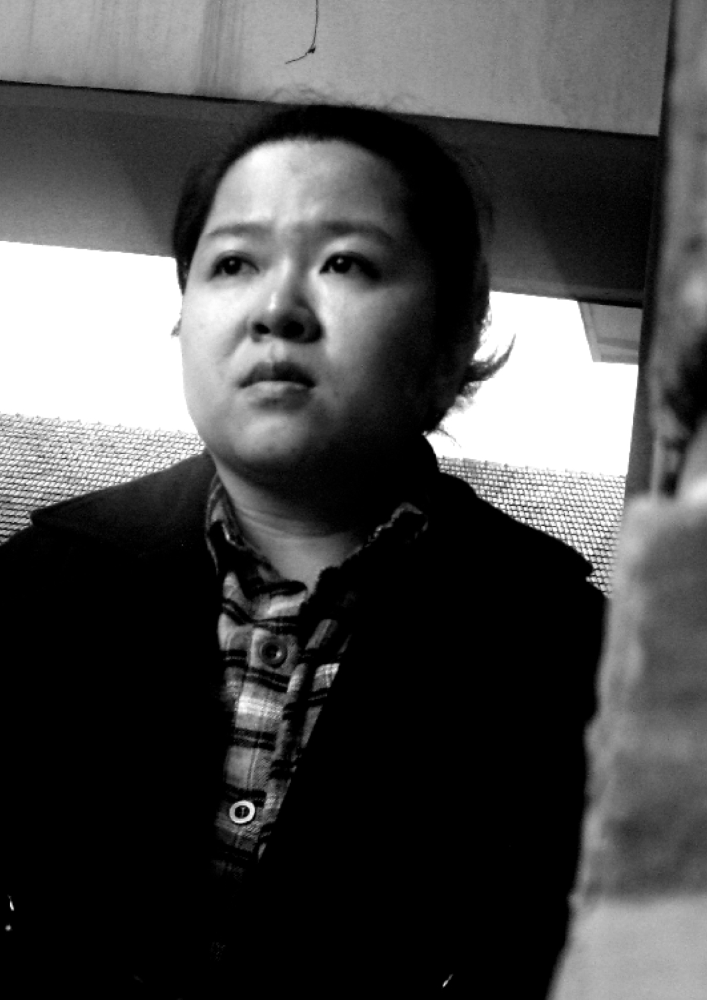
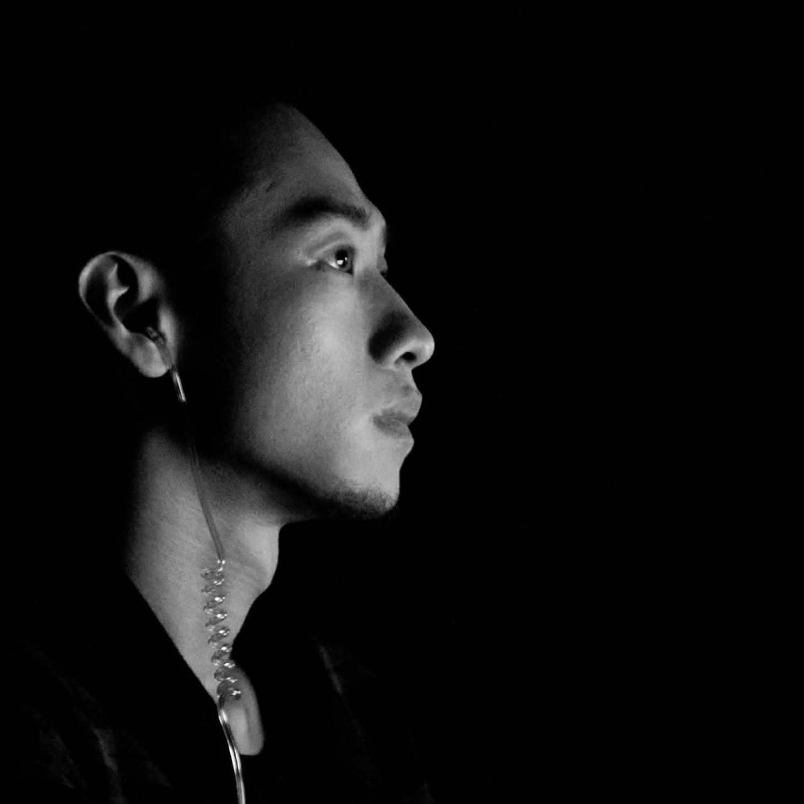
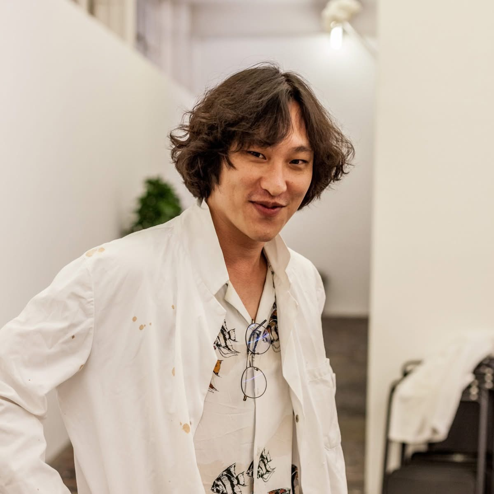

場次 01
13:30 – 14:50
從零開始的永續生活
——淨零與文化的關係
聚焦氣候行動與文化政策交會，探討 ESG 框架如何融入藝術機構治理。
張良伊
鄭睿合
黃梓柔
→
隨著新媒體藝術在國際與台灣文化現場的快速發展，其創作與展演過程也帶來新的環境挑戰。
高畫質影像串流、AI 運算與大型互動裝置的能源負荷持續增加，然而新媒體藝術產業目前普遍缺乏永續創作的知識與實踐工具。
金車文藝中心與凡事設計攜手主辦「新媒體藝術 × 淨零未來」藝術永續論壇，邀請國立臺南藝術大學動畫藝術與影像美學研究所羅禾淋副教授擔任計畫主持人，以藝術創作、策展實務與文化政策三個面向為核心，廣邀國內頂尖跨域專家共同對話。
從政策、策展到創作，完整呈現淨零轉型於藝術產業的多元實踐。
聚焦氣候行動與文化政策交會，探討 ESG 框架如何融入藝術機構治理。
分享文化場域推動淨零的第一線經驗，探索文化保存與淨零轉型之間的共同語言。
邀請以創作實踐永續理念的新媒體藝術家分享具體案例，為台灣新媒體藝術的淨零路徑提供實踐參照。
八位跨領域頂尖專家，齊聚共創永續對話。

國立臺南藝術大學動畫藝術與影像美學研究所副教授
科技藝術暨未來表演實驗室主持人
台灣第一位使用四軸無人機進行創作的藝術家，作品曾受邀於 Ars Electronica Festival、Siggraph Asia、FILE 等國際電子藝術節展出。積極推動新媒體藝術的淨零轉型研究與實踐。

Plan b 顧問公司 Senior Partner・台灣青年氣候聯盟共同創辦人
2009 年起持續出席聯合國氣候變遷大會，是台灣最早投身國際氣候行動的推動者之一。2013 年成為第一位入選 2041 南極計畫的台灣青年。長期推動環境正義與系統性永續轉型，現同時於 350.org 主導亞洲區策略佈局，並於 Plan b 提供永續顧問服務。

中華經濟研究院第三研究所 高級分析師
專長能源經濟、環境經濟、產業經濟與電力經濟。長期深耕文化產業淨零轉型研究，是台灣文化部門淨零政策的核心研究者。

茂識管理顧問顧問師・北藝大藝術行政與管理研究所兼任助理教授
曾任國家兩廳院永續顧問，深耕文化藝術場域的永續管理實踐。長期探索 ESG 框架如何融入藝術機構治理。

財團法人台南企業文化藝術基金會執行長・永續教育與循環設計推動者
長期專注於永續教育、食農創新與循環設計。曾策劃全台首創的永續教育行動與市集，獲遠見雜誌 CSR 環境友善組企業楷模獎及台灣循環經濟獎跨界創新組金獎。

ESG 顧問・台南文化資產與永續實踐者
長期深耕台南文化資產保存與活化領域，積極推動文化場域的 ESG 永續實踐。探索文化保存與淨零轉型之間的共同語言。

跨域藝術創作集體「豪華朗機工」成員
作品多取用現地媒材，討論奇觀社會中的人性思維。代表作《日光域》系列以回收路燈與廢棄平板電腦為素材，將廢棄科技轉化為詩意的光裝置。

藝術家・染料敏化太陽能開源研究者
「1,540,000nm of DSSC」計畫為一開源染料敏化太陽能實驗，將原本封閉的高科技黑盒轉化為可再製與可批判的材料實踐。長期參與並組織國際獨立藝術網絡。
2026 年 5 月 3 日（週日）
每位講者 20 分鐘短講共 60 分鐘，最後 20 分鐘對談與討論。
每位講者 30 分鐘短講共 60 分鐘，最後 20 分鐘對談與討論。
每位講者 30 分鐘短講共 60 分鐘，最後 20 分鐘對談與討論。
2026 年 5 月 3 日（週日）
13:00 – 18:10
金車文藝中心 臺北承德館
臺北市大同區承德路三段 131 號
免費參加
可事先線上報名或現場報名
藝術家・藝術評論者・科技專家
淨零產業・政府及學術界・一般公眾